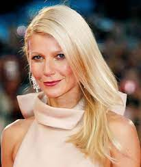

Different lifestyles
Lets get healthy and fit together

Healthy Lifestyles
The origins of healthy lifestyles can be traced back to ancient civilizations, where individuals recognized the intrinsic connection between well-being and certain lifestyle choices. In ancient Greece, for instance, the concept of a balanced life, encompassing physical exercise, a nutritious diet, and mental well-being, was championed by philosophers like Hippocrates. His famous quote, "Let food be thy medicine and medicine be thy food," underscores the importance of nutrition in maintaining good health. Similarly, Eastern traditions such as Ayurveda and Traditional Chinese Medicine have long emphasized the holistic approach to health, incorporating aspects of diet, exercise, and mental balance. Over time, as societies evolved, scientific advancements further elucidated the benefits of adopting a healthy lifestyle, leading to the development of modern health practices, fitness routines, and dietary guidelines that form the foundation of our contemporary understanding of well-being.
People that encourage healthy lifestyles
Michelle Obama
The former First Lady of the United States initiated the "Let's Move!" campaign to combat childhood obesity and promote healthy habits.
Jamie Oliver
A celebrity chef and food activist, Oliver campaigns for healthier diets, better food education, and improved food policies.
Gwyneth Paltrow
The actress and entrepreneur founded Goop, a wellness and lifestyle brand, promoting healthy living, mindfulness, and holistic well-being.
Arnold Schwarzenegger
The iconic bodybuilder and actor has been an advocate for fitness and healthy living throughout his career.

Oprah Winfrey
Media mogul Oprah Winfrey has been a proponent of healthy living, often featuring health and wellness topics on her shows
Reasons why
Maintaining a healthy lifestyle is integral to overall well-being, offering a myriad of physical, mental, and emotional benefits. From a physical perspective, regular exercise and a balanced diet contribute to increased energy levels, improved cardiovascular health, and a strengthened immune system. Embracing healthy habits also plays a crucial role in preventing chronic illnesses and maintaining a healthy weight. Beyond the physical advantages, a healthy lifestyle positively impacts mental health, reducing stress, anxiety, and depression. Adequate sleep, another component of a healthy routine, enhances cognitive function and emotional resilience. Moreover, healthy living fosters a positive mindset, promoting self-confidence and a sense of accomplishment. Ultimately, adopting a healthy lifestyle is not just about the absence of illness but about cultivating a vibrant and fulfilling life, where individuals can thrive both physically and mentally.